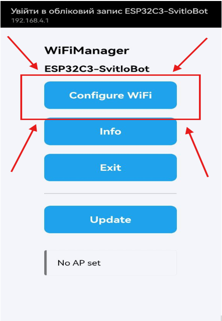
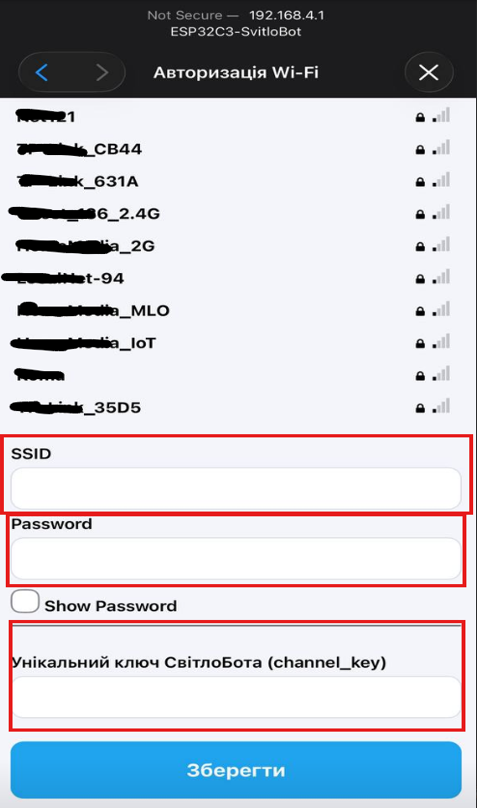
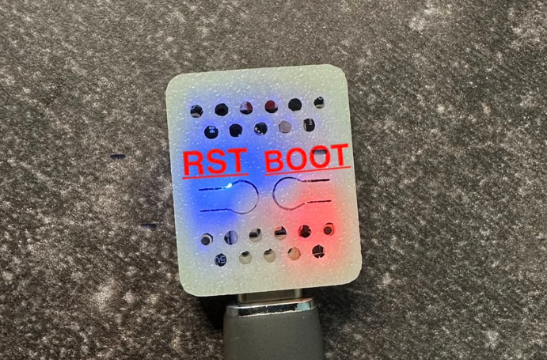

⚡ Створення СвітлоБота в Telegram та отримання унікального ключа
Ця інструкція потрібна, щоб створити власний канал, підключити до нього чат-бота СвітлоБот і отримати
унікальний ключ (channel_key) — він потрібен для ESP32.
Введіть публічне посилання, яке починається з svitlobot_
(наприклад: svitlobot_Khreschatyk24)
Натисніть «Зберегти»
Поверніться в чат і натисніть: ✅ Я створив(-ла) канал
Крок 5
Додайте бота в канал
Відкрийте канал
Інформація → Адміністратори
Додайте @SvitloUkraineBot
Надайте йому ВСІ права адміністратора
Підтвердіть у чаті: ✅ Я додав(-ла) цього чат-бота до каналу
Крок 6
Введіть публічне посилання на ваш канал, яке ви ввели при створенні каналу:
Введіть посилання, як на одному із прикладів:
svitlobot_Khreschatyk24
@svitlobot_Khreschatyk24
t.me/svitlobot_Khreschatyk24
https://t.me/svitlobot_Khreschatyk24
Бот перевірить канал і надішле тестове повідомлення.
✅ Я бачу повідомлення
Крок 7
Підтвердження назви
Введіть текст для кінцівки назви каналу. Назва стане:
СвітлоБот ⚡ (Ваша назва)
✅ Підтверджую
Крок 8
Опис каналу
Можна ввести свій опис або залишити як є:
🫥 Я хочу залишити так, як є
🔧 Налаштування плати через Web-інтерфейс
Цей розділ потрібен, щоб підключити плату до вашого домашнього Wi‑Fi та ввести унікальний ключ СвітлоБота.
1) Підготовка та активація режиму налаштування
З коробки при подачі живлення на плату синій індикатор має блимати.
Якщо не блимає — Затисніть кнопку BOOT 5-7 сек(зі сторони червоного лед).
Перевірте живлення.
. Має стабільно світитися червоний індикатор (живлення є).
.
Перевірка: якщо синій індикатор почав блимати — плата перейшла в режим налаштування і створила власну Wi‑Fi мережу.
2) Підключення до плати
Відкрийте список доступних Wi‑Fi мереж на телефоні або ноутбуці.
Підключіться до мережі ESP32C3-SvitloBot (пароль: 12345678).
Якщо пристрій запитає, чи залишатися в мережі без інтернету — обирайте “Так” або “Завжди приєднуватись”.
Після підключення зазвичай автоматично відкривається сторінка налаштування (Configure Wi‑Fi).
Якщо не відкрилась — відкрийте браузер і введіть: 192.168.4.1
Перед вами відкриється сторінка — натискайте на кнопку Configure WiFi:

Скріншот — кнопка Configure WiFi
Потім оберіть вашу точку доступа (ВАШ РОУТЕР ДО ЯКОГУ БУДЕ ПІДКЛЮЧЕНА ПЛАТА), введіть пароль Wi‑Fi і вкажіть
Унікальний ключ (який надіслав СвітлоБот після створення каналу):

Скріншот — вибір Wi‑Fi, пароль та унікальний ключ
Натисніть кнопку Save / Зберегти. Плата автоматично перезапуститься й підключиться до вашого Wi‑Fi.
Призначення Кнопок на платі:
• RST — перезавантаження
• BOOT — скидання WI-FI мережі і пристрою(натиснути і тримати 5 сек)

Скріншот 9 — призначення кнопок RST/BOOT
Після введення ключа в пристрій:
канал з’явиться на мапі
бот буде автоматично повідомляти про стан світла
при зникненні живлення пристрій перестане “пінгувати” сервер
🛠 Якщо щось не працює
Не бачу тестове повідомлення в каналі
Перевірте, що ви додали @SvitloUkraineBot саме в канал (не в чат/групу).
Перевірте, що бот має усі права адміністратора.
Перевірте, що посилання на канал введене без помилок.
Ключ є, але пристрій не з’являється на мапі
Перевірте, що ви ввели ключ без пробілів (краще вставляти копіюванням).
ESP32 має підключатися до Wi-Fi 2.4GHz та мати інтернет.
Спробуйте перезапустити пристрій після збереження налаштувань.
Важливо: не змінюйте параметри каналу вручну
Не змінюйте назву/опис/публічне посилання/лого каналу вручну та не забирайте права у бота — інакше система може
працювати некоректно.